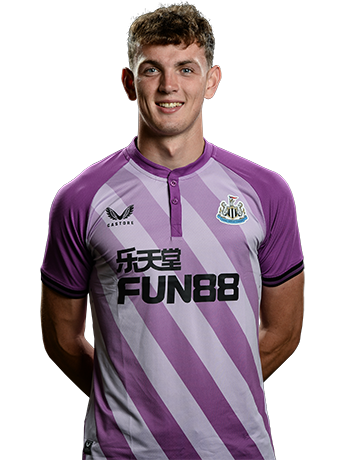

Freddie Woodman
Signed from Southend United in the March transfer window of 2020, the Londoner provides cover in the goalkeeping department.

Dan Langley
Signed from Westham United in the January transfer window of 2013, the Londoner provides cover in the goalkeeping department.
Ciaran Clark
Signed from Southend United in the June transfer window of 2010, the Londoner provides cover in the goalkeeping department.